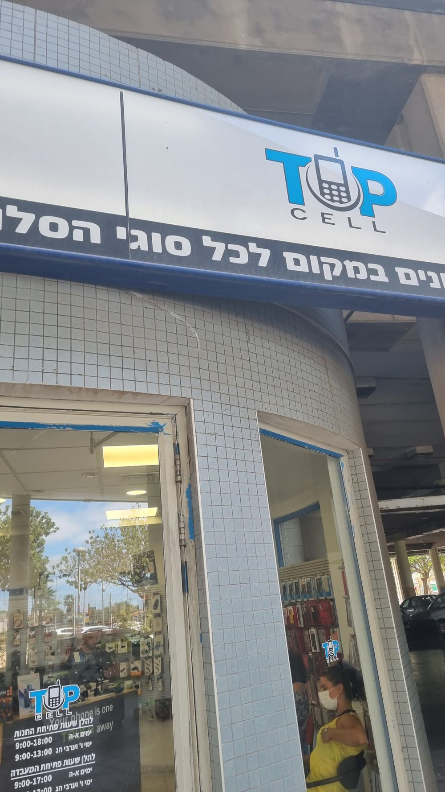
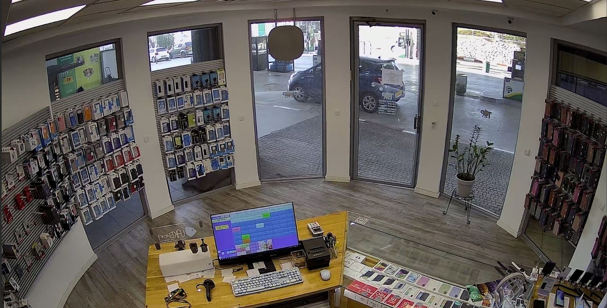
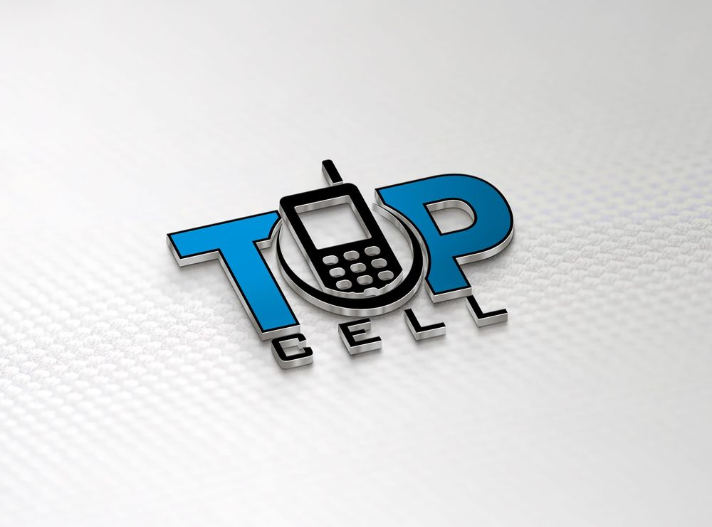
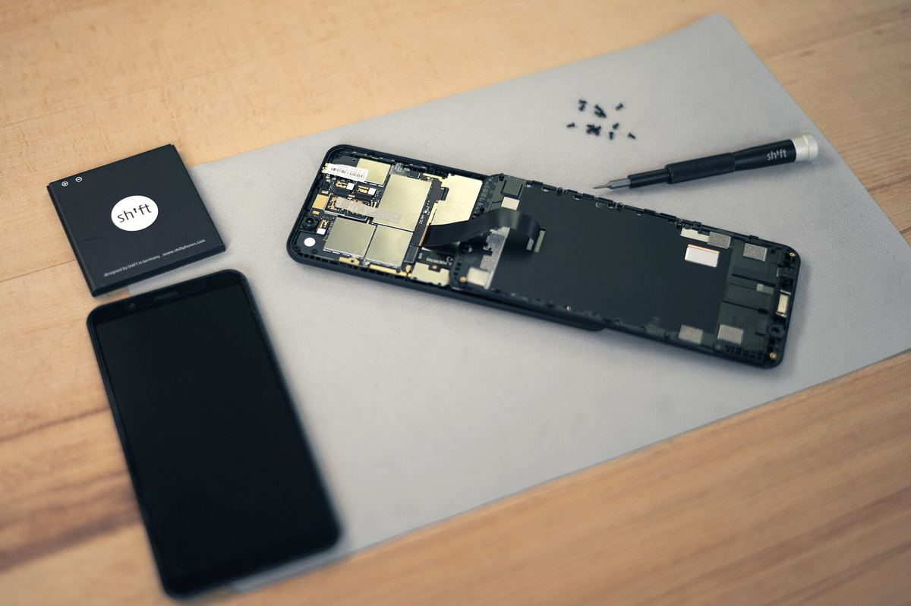
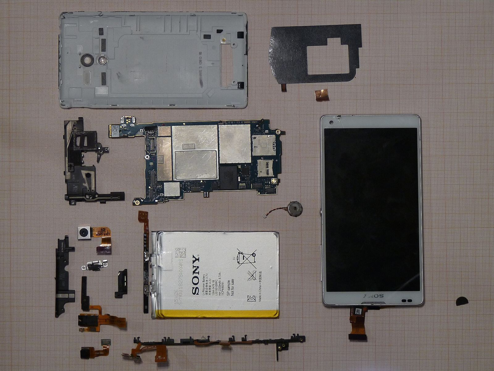

החנותThe shop
מכשירים, כיסויים ואביזרים.Phones, cases and accessories.
קונספט לדוגמה שנבנה עבור TopCell – טופסל · זה אינו האתר הרשמי של העסקA sample concept built for TopCell · This is not the business’s official website
חנות סלולר ומעבדת תיקונים במקוםA phone shop and repair lab, on the spot
במתחם דור אלון מתחת לקניון חיפה · דרך משה פלימן 4In the Dor Alon complex under Haifa Mall · 4 Moshe Flimann Rd



החנות נמצאת בתוך מתחם תחנת דור אלון, דרך משה פלימן 4, חיפה.The shop sits inside the Dor Alon station complex, 4 Moshe Flimann Rd, Haifa.
מכשירים, אביזרים ותיקונים לכל סוגי הסלולר.Phones, accessories and repairs for every kind of mobile.
מכשירים, כיסויים ואביזרים.Phones, cases and accessories.

תמונה להמחשהIllustrativeתיקונים במקום, לכל סוגי הסלולר.Repairs on the spot, every kind of mobile.
מהמכשיר הישן לחדש.From the old phone to the new one.
בדיקה וניקוי של השקע.Checked and cleaned.
עוזרים לבחור את המתאים לכם.Help choosing the one that fits you.
למשל בעיות ב-Apple ID.Apple ID trouble, for example.
מסך, סוללה, לוח, מצלמה. ככה נראה טלפון פתוח על השולחן.Screen, battery, board, camera. This is a phone opened on the bench.

המקשים מכינים משפט פתיחה. המקש הירוק מחייג לחנות.The keys write your opening line. The green key calls the shop.
מתוך 5 · 106 ביקורותout of 5 · 106 reviews
הגעתי לחנות עם בעיה בטעינה וחשבתי שאצטרך תיקון רציני. גל הטכנאי בדק, הסביר שהשקע רק היה מלוכלך. טיפל במהירות ולא לקח שקל! שירות מקצועי אמין ואנושי. מומלץ בחום!
I came to the shop with a charging problem and thought I’d need a serious repair. Gal the technician checked and explained the port was just dirty. He dealt with it quickly and didn’t take a shekel! Professional, reliable, human service. Highly recommended!
חנות אמינה ומקצועית ברמה הגבוהה ביותר הגעתי כדי לקנות מכשיר חדש וקיבלתי יחס מקצועי חם וסבלני. לא ניסו לדחוף סתם מכשיר אלה התאימו לצרכיי במדויק. העבירו את הנתונים מנייד לנייד במהירות ובלי לאבד שום דבר. מומלץ בחום. ללא ספק אחזור שוב!
A reliable, professional shop of the highest level. I came to buy a new phone and got warm, patient, professional treatment. They didn’t try to push just any phone, they matched my needs precisely. They moved the data from phone to phone quickly, without losing anything. Highly recommended. I’ll definitely be back!
המון תודה לגל - המנהל של החנות, שנתן שרות מעולה, פתר לאמא שלי בעיית האפל אי די ולא לקח כסף, הכל באדיבות ובמקצועיות מדהימה! תודה רבה!
Many thanks to Gal, the store manager, who gave excellent service. He solved my mom’s Apple ID problem and didn’t take any money, all with courtesy and amazing professionalism! Thank you!
הגעתי בעקבות הביקורות החיוביות למרות שזאת לא המעבדה שהכי קרובה אליי. שירות אדיב ומושלם, מחיר הוגן, תיקון מהיר. מרוצה מאוד וממליצה!!!
I came because of the positive reviews, even though it isn’t the lab closest to me. Courteous, perfect service, a fair price, a quick repair. Very pleased, and I recommend it!!!
גל נסיך של ידע, קסם אישי ומקצועיות. שמתי את כל חיי בידיו, סומכת עליו ב 100%. נקווה שלא נתראה בקרוב, כבר מתגעגעת. חיבוק תודה
Gal is a prince of knowledge, personal charm and professionalism. I put my whole life in his hands and trust him 100%. Let’s hope we don’t meet again soon, I already miss you. A hug, thank you
במתחם תחנת הדלק דור אלון, מתחת לקניון חיפה. דרך משה פלימן 4.In the Dor Alon fuel-station complex under Haifa Mall, 4 Moshe Flimann Rd.
שתיהן: חנות סלולר ומעבדת תיקונים במקום, באותה כתובת.Both: a phone shop and an on-site repair lab at the same address.
א׳–ה׳ 10:00–18:00, שישי 10:00–13:00. בשבת סגור.Sun–Thu 10:00–18:00, Friday 10:00–13:00. Closed on Saturday.
כן. TopCell – טופסל הוא השם החדש של טאצ׳ תיקונים חכמים.Yes. TopCell is the new name of Touch Smart Repairs.